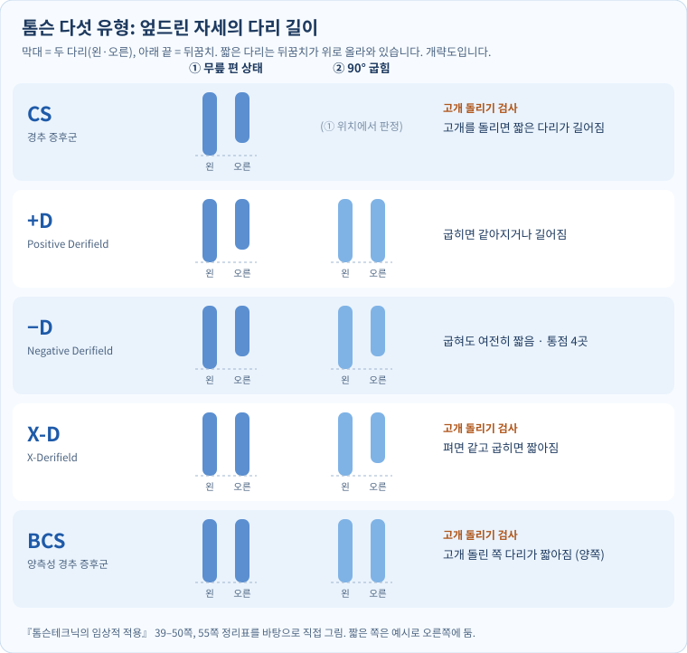

1. 강의 개요
4강은 1강에서 본 AK의 네 영역 가운데 ④ 구조를 다룹니다. 엎드린 사람의 다리 길이를 무릎을 편 상태와 굽힌 상태에서 비교해 다섯 유형으로 나누는 톰슨테크닉을 배우고, 강사가 세운 "골반 PI → 고관절 슬립 → 햄스트링 약화" 가설을 실습했습니다.
| 항목 | 내용 |
|---|---|
| 교육과정 | AK 자연치유요법 12주 과정 |
| 회차 | 제4강 (90분) |
| 주제 | 카이로프랙틱 톰슨테크닉 5유형과 골반·햄스트링 스포츠재활 |
| 강사 / 기관 | 비공개 (개인 학습용 정리) |
| 자료 | 학생용 원고 4쪽, 녹취 두 개(실습 시연 약 6분, 설명·실습 약 25분, 자동 인식본이라 불분명한 곳이 많음) |
| 보충 자료 | 『톰슨테크닉의 임상적 적용』(강의에서 "55쪽 톰슨 카테고리"를 보라고 한 책), 『응용근신경학』(AK 교과서), 강사 제공 자연치유요법 교재 「구조 균형 잡기」. 책 쪽수는 인쇄된 쪽 번호입니다 |
학습목표 (원고): 다리 길이 관찰의 한계를 이해하고, CS / +D / −D / X-D / BCS를 구분해 평가·교정 판단의 흐름을 설명한다. 골반 기능·햄스트링·달리기 효율에 관한 임상 가설을 객관적 재평가와 연결한다.
- 원고의 성격: 강의에서 강사는 이 원고를 AI가 정리해 준 것이라고 했고(15:36–15:46), 원고 끝에는 "톰슨테크닉 원문(136쪽 자료)과 대조하지 않은 초안"이라고 적혀 있습니다. 이 노트는 그 책과 대조했습니다(3장 [보충]).
- 녹음 메모: 실습 중에 교정 동작을 손으로 보여 주는 부분이 많아 녹취만으로는 동작을 알 수 없는 곳이 있습니다. 그런 곳은 적지 않았습니다.
2. 전체 흐름
flowchart TD
A[문진 · 위험 신호 확인] --> B[엎드림 · 정렬 맞추기]
B --> C[① 무릎 편 상태<br/>다리 길이 비교]
C --> D{고개를 돌리면<br/>짧은 다리가 길어지나?}
D -- 예 --> CS[CS<br/>경추 먼저]
D -- 아니오 --> E[② 무릎 90° 굽힘<br/>다시 비교]
E --> P[+D: 짧던 다리가<br/>같아지거나 길어짐]
E --> N[−D: 여전히 짧음<br/>통점 4곳 확인]
E --> X[X-D: 펼 때 같았는데<br/>굽히면 한쪽이 짧아짐]
E --> B2[BCS: 펼 때도 굽힐 때도 같음<br/>고개 돌린 쪽 다리가 짧아짐]
P --> R[교정 → 같은 조건에서 재검]
N --> R
X --> R
CS --> R
B2 --> R
- 톰슨테크닉은 CS부터 봅니다. 경추 문제로 다리 길이가 달라진 것을 먼저 없애야 골반을 판단할 수 있다는 순서입니다(강의 09:49–09:56, 12:29–12:36, 책 39쪽).
- 강사의 실제 순서: "결국 경추까지 다 교정해 주니까 순서는 크게 상관없는 것 같다"고 했습니다(13:25–13:45). 원고와 책은 순서를 지키라고 합니다.
3. 다섯 유형 — 검사와 판정
기본 자세 (원고 + 책 41–42쪽): 엎드린 자세에서 골반·무릎·발목 정렬을 맞추고 양발의 기준점을 같게 합니다. 책은 검사자가 엄지로 양쪽 뒤꿈치를 감싸 잡고, 발이 안팎으로 돌아가거나 발목이 꺾이지 않게 한 뒤 비교하라고 합니다. ① 위치 = 무릎을 편 상태(신전), ② 위치 = 무릎을 90°로 굽힌 상태(굴곡)이고, 90°를 넘기지 않습니다. 강한 견인·압박은 피합니다(원고).


| 유형 | 이름 | ① 편 상태 | ② 90° 굽힌 상태 | 고개 돌리기 | 책이 가리키는 곳 |
|---|---|---|---|---|---|
| CS | Cervical Syndrome (경추 증후군) | 한쪽이 짧음 | — | ① 위치에서 고개를 돌리면 짧은 다리가 길어짐(같아지거나 넘어감) | 경추. 고개를 돌린 쪽의 반대편에서 경결이 만져진다고 함 |
| +D | Positive Derifield | 한쪽이 짧음 | 짧던 다리가 같아지거나 길어짐. 굽힐 때 근육이 버티는 느낌 | (CS가 아님을 먼저 확인) | 단족 쪽 장골(PI) |
| −D | Negative Derifield | 한쪽이 짧음 | 굽혀도 여전히 짧음 | (CS가 아님을 먼저 확인) | 통점 4곳 중 2곳 이상이면 −D. 아니면 5번 허리뼈 회전·요추 후관절 |
| X-D | X-Derifield | 같음 | 한쪽이 짧아짐 | ② 위치에서 고개를 돌려 짧은 다리가 길어지면 CS 먼저, 변화 없으면 −D로 다룸 | 대부분 CS나 −D |
| BCS | Bilateral Cervical Syndrome (양측성 경추 증후군) | 같음 | 같음 | 왼쪽으로 돌리면 왼다리, 오른쪽으로 돌리면 오른다리가 짧아짐 | 뒤통수뼈와 1번 목뼈 사이 관절 |
(책: CS 39–42쪽, +D 42쪽, −D 45–46쪽, X-D 48–50쪽, BCS 50쪽, 정리표 55쪽)
−D의 통점 4곳 (책 45쪽 그림 3-10): 단족 쪽부터 ① 뒤엉덩뼈가시(PSIS, 엉덩이 위 보조개 자리) ② 궁둥뼈결절(앉을 때 닿는 뼈) ③ 넓적다리뼈 안쪽 위관절융기의 안쪽(무릎 안쪽) ④ 치골결절(두덩뼈 앞)을 누릅니다. 2곳 이상 아프면 −D로 봅니다. 강의에서도 "통점을 찾아 두고, 교정이 됐으면 다리 길이도 맞고 통점도 사라져야 한다"고 했습니다(10:04–11:21).
[보충] 원고와 책이 다른 곳 (『톰슨테크닉의 임상적 적용』 기준)
| 항목 | 원고 | 책 | 정리 |
|---|---|---|---|
| CS의 판정 | "경추 움직임·증상과 하지 길이 반응의 관련성을 탐색" | 편 상태에서 고개를 돌렸을 때 짧은 다리가 길어질 때만 CS. 길이가 "변하기만" 하는 것은 CS가 아님(42쪽) | 책 기준으로 판정 |
| +D | 신전에서 단족, 굴곡 시 같아지거나 역전 | 같음 + 굽힐 때 근육 저항이 "턱 걸리는" 느낌 | 같음 |
| −D | 굴곡 시에도 단족으로 남음 | 같음 + 통점 4곳 판정 | 원고에 없는 통점 판정을 추가 |
| X-D | "교재별 정의 차이: 교차 또는 비전형적 변화" | 편 상태에서 같고 굽히면 한쪽이 짧아짐(48쪽). 강의 설명(04:35–04:41)도 같음 | 책·강의 기준으로 정의 |
| BCS | "양측 경추 반응과 하지 길이 패턴을 함께 평가" | 펴도 굽혀도 같고, 고개 돌린 쪽 다리가 양쪽 다 짧아짐(50쪽). 강의(06:03–06:28)도 같음 | 책·강의 기준으로 정의 |
강의에서 덧붙인 것
- 얼마나 흔한가 (09:13–09:30): 강사 경험으로는 대부분이 +D이고, −D는 1년에 한두 명, X-D는 1년에 한 명 정도라고 했습니다. 책도 "X-D는 사실 CS거나 −D인 경우가 대부분"이라고 합니다(50쪽).
- 겹쳐 나올 수 있습니다 (12:42–13:21): +D나 −D이면서 CS가 함께 있을 수 있습니다. 그래서 굽혀도 변화가 없으면 CS를 다시 봅니다.
- BCS의 교정: 한쪽씩 돌리지 않고 머리를 끝까지 늘린 상태에서 한 번에 밀어 양쪽을 함께 교정한다고 했습니다(14:00–14:55). 강사는 BCS를 고개 돌리기 대신 근육검사(AK)로 바로 찾는다고 했습니다(07:08–07:10). 이 검사는 책의 방법이 아닙니다.
- 5유형을 먼저 익히고, 흉추·갈비뼈 회전·어깨뼈·목 위쪽 관절 안정화 같은 추가 교정은 그다음이라고 했습니다(07:20–08:47).
4. 실습 절차 — 평가, 교정 판단, 재평가
원고의 공통 평가 원칙
- 문진: 통증 위치·기간, 외상, 골다공증, 골절, 수술력, 신경학적 증상, 운동 종목과 훈련량.
- 위험 신호 → 교정하지 않고 의료 평가부터: 점점 심해지는 근력 저하·감각 장애, 대소변 장애, 심한 외상, 감염·종양 의심, 목 혈관 관련 증상.
- 반복성: 2~3회 재검, 관찰자 간 차이, 고관절 회전·근긴장·발목 자세의 영향을 기록.
- 교정 판단: 통증·기능·가동범위·근력 같은 독립 지표를 종합한다. 실제 드롭 교정은 전문 교육·감독 아래에서만.
- 공통 교정 흐름(다섯 유형 모두 같음): 적응증·금기 확인 → 통증 없는 자세 → 교정 부위·방향을 다른 기능검사와 원서 기준으로 교차 확인 → 자격 있는 지도자 감독 아래 시행 → 즉시 재검. 원고는 접촉점·방향·드롭 높이를 일부러 적지 않았습니다. 이 노트도 교정 동작은 적지 않습니다.
강의 시연에서 본 것
- 교정 뒤 다리 길이가 "거의 같아졌다"를 확인하고, 발목이 굳은 사람은 발목 교정을 따로 했습니다(녹음 1, 00:40–01:25).
- 의자에 앉혀 몸통이 틀어진 쪽을 보고 몸통을 돌리며 교정하는 동작도 보여 주었습니다(녹음 1, 04:44–04:58).
- 교정한 사람이 효과를 느끼게 하려고 교정 전후에 슬립과 햄스트링 저항을 직접 느끼게 해 준다고 했습니다(23:06–23:57).
실습 기록지 (원고 6장) — 교정 전·후를 같은 칸에 적습니다.
| 항목 | 교정 전 | 교정 후 |
|---|---|---|
| 통증 (0–10) | ||
| 편 상태의 단족 | ||
| 굽힐 때 변화 | ||
| 고관절 가동범위 | ||
| 햄스트링 저항 좌/우 | ||
| 달리기·보행 관찰 |
실습자, 피검사자, 검사 반복 횟수, 특이사항도 함께 적습니다. 기록을 맹검으로 남기는 방법은 8장에 있습니다.
5. 골반 PI 가설, 고관절 슬립, 햄스트링
강사의 가설 (15:36–17:36, 19:28–20:24)
- 단족 쪽(+D) 장골이 PI(뒤아래쪽)로 돌아갑니다. PI는 뒤엉덩뼈가시(PSIS)가 뒤아래로 옮겨진 상태입니다(책 24쪽).
- 그러면 고관절에서 슬립이 생깁니다. 다리를 편 채 발바닥 쪽에서 머리 쪽으로 살짝 밀면, 정상 쪽은 "딱 붙어" 있는데 PI 쪽은 밀리는 느낌이 난다고 했습니다.
- 달리기는 바닥을 밀며 차고 나가는 동작이라, 슬립이 있으면 반발력이 떨어진다는 설명입니다. 선수 본인은 느끼지 못한다고 했습니다.
- 슬립이 있는 쪽은 햄스트링 저항검사에서 버티지 못한다고 했습니다. 단거리 선수가 순간 스퍼트에서 햄스트링이 파열되는 것도 이런 경우가 많다는 견해입니다.
- 시연: 교정 뒤 슬립이 없어지고 햄스트링에 "힘이 딱 들어온다"고 했습니다(21:39–22:13).
햄스트링 저항검사 (원고 5장, 강의 19:41–21:20): 엎드림 → 무릎을 약 45° 굽힘 → 검사자가 발목·뒤꿈치에 무릎을 펴는 방향으로 점점 힘을 줌 → 피검사자는 굽힌 자세를 유지 → 좌우의 힘·통증·보상 움직임을 기록합니다. 강의에서는 "하나, 둘, 셋" 하고 누른다고 했습니다. 검사 힘과 손 위치(지렛대 길이)를 매번 같게 합니다(원고).
원고가 붙인 선 (원고 4·5장)
- 슬립 관찰은 "기존 임상 아이디어"이고 구조적 변위를 확진하는 방법이 아니다. 통증을 일으키는 강한 압박은 피하고, 재현성이 검증되기 전에는 슬립이나 탈구의 객관적 증거로 기록하지 않는다.
- 다리 길이 차이는 실제 뼈 길이 차이, 고관절 회전, 근긴장, 검사 자세, 관찰 오차에서도 생긴다. 고관절의 실제 아탈구·불안정은 의학적 평가가 필요하다.
- 햄스트링은 고관절 신전, 무릎 굴곡, 스프린트 말기 다리 감속에 관여한다. 그러나 "PI 교정 → 슬립 해소 → 햄스트링 100% 회복 → 기록 향상"이라는 연쇄 인과는 검증되지 않았다. 근력·통증·ROM·달리기 영상·기록을 함께 확인한다.
[보충] 책과 맞춰 보면
- PI와 햄스트링의 방향이 책과 반대입니다. 『톰슨테크닉의 임상적 적용』 46쪽은 반막양근·반건양근(안쪽 햄스트링)의 긴장이 커지면 궁둥뼈를 앞아래로 끌어 장골이 PI로 돌아간다고 적습니다. 햄스트링 긴장이 원인, PI가 결과입니다. 강의는 PI 때문에 햄스트링이 약해진다고 했습니다. 42쪽은 +D 장골 교정 뒤에도 +D가 남으면 엉덩허리근과 이 두 햄스트링을 함께 다루라고 합니다. 어느 쪽이든 PI와 햄스트링이 이어져 있다는 점은 같지만, 원인과 결과의 방향은 다르게 설명합니다.
- "슬립"이라는 말과 검사는 책에서 찾지 못했습니다(본문 글자 검색). 원고 말대로 강사의 임상 아이디어로 봅니다.
- 『응용근신경학』 3장 「1형 골반변형」(162–163쪽): 짧은 다리 쪽에서 뒤엉덩뼈가시가 뒤로 밀려 있을 때 유발검사가 양성으로 나온다고 해, 단족 쪽 장골이 뒤로 간다는 점은 같습니다. 다만 이 책은 "유발검사 결과와 다리 길이 차이가 일치하지 않으면 유발검사를 우선한다"고 하고, 실제 뼈 길이 차이나 신경계 부조화(2강 3장)도 따져야 한다고 적습니다. 다리 길이 하나로 판단하지 말라는 원고와 같은 방향입니다.
- IN·EX (책 65쪽): 원고의 "PI(후하방·외측)"에서 "외측"은 책에서는 PI와 따로 보는 EX(장골이 천골에서 멀어짐)입니다. 책은 보통 PI·AS와 IN·EX가 함께 온다고 합니다.
6. 전체 흐름과 연결
- 1강 4대 영역: 에너지 → 정신 → 화학 → 구조. 4강은 구조의 첫 회차입니다. 강사 제공 자연치유요법 교재 「구조 균형 잡기」는 척추의 구조 문제가 신경 → 내부 장기 → 근육 약화 → 구조 붕괴로 이어지는 악순환을 설명합니다.
- 강사의 "양날개" 설명 (18:04–19:25): 질문에 답하며, 교정만으로는 오래 유지되기 어렵고(오전에 교정해도 2시간쯤 지나면 다시 틀어진다고 함), 근육은 경락 같은 "보이지 않는 에너지"의 지배를 받으므로 보이지 않는 부분(에너지·정신·화학)과 보이는 부분(구조 교정·테이핑)을 함께 다뤄야 효과가 커진다고 했습니다. 이것이 AK 자연치유요법의 기본 구조라는 설명입니다.
- 근육검사와의 연결: 햄스트링 저항검사는 1강의 근육반응검사와 같은 원리(일정한 자세·방향·압력)로 합니다. 1강의 원칙과 8장의 맹검 방법을 그대로 적용하면 됩니다.
- 2강 Switch On과 『응용근신경학』의 신경계 부조화: 이 책은 신경계 부조화가 있으면 다리 길이·근육검사 결과가 예측대로 나오지 않는다고 하므로, 다리 검사 전에도 Switch On을 하는 것이 앞뒤가 맞습니다(2강 3장 [보충]).
7. 원고에 없던 강의 내용
| 시각 | 내용 |
|---|---|
| 00:14–01:28 | 다섯 유형 이름 소개. CS는 경추가 한쪽으로 틀어지며 다리 길이에 영향을 주는 것, BCS는 양쪽 경추가 함께 영향을 주는 것 |
| 07:08–07:10 | BCS를 고개 돌리기 대신 근육검사(AK)로 찾는다 |
| 07:20–08:47 | 흉추·갈비뼈 회전·어깨뼈 교정, 목 위쪽 관절 안정화 등 추가 기법은 5유형을 익힌 뒤 |
| 09:13–09:30 | 대부분 +D, −D·X-D는 1년에 한두 명 |
| 09:34–09:41 | 책 55쪽 톰슨 카테고리 표만 이해하면 되고 나머지는 읽어 보면 된다 |
| 10:04–11:21 | 통점을 찾아 두고, 교정 후 통점도 사라졌는지 확인 |
| 13:25–13:45 | 실제로는 경추까지 다 교정하므로 순서는 크게 상관없다는 강사의 루틴 |
| 15:21–15:33, 24:39 | 액티베이터 관련 책을 찾아 다음에 주겠다고 함 |
| 15:36–15:46 | 원고는 AI가 정리했고, PI 가설을 강사가 강조해서 들어갔다는 설명 |
| 18:04–19:25 | 교정은 오래 유지되기 어렵다(2시간쯤 지나면 다시 틀어짐), 보이는 부분과 보이지 않는 부분을 함께 다루는 "양날개" |
| 22:16–22:25 | 단거리 선수에게 골반 교정이 매우 중요하다는 주장 |
| 녹음 1 03:32–03:53 | BCS의 다리 검사는 하지 않고 다른 검사와 일자목 여부로 본다고 함(녹음이 불분명) |
8. 비판적 검토 — 근거 수준과 주의점
결론부터: 원고는 스스로 "다리 길이만으로 확정하지 말고 독립 지표로 재평가하라"는 선을 그었고, 그 선은 타당합니다. 검사의 신뢰도를 직접 잰 연구를 보면, 엎드린 다리 길이 검사에서 믿을 만한 것은 "어느 쪽이 짧은가"까지이고, 고개 돌리기 검사는 우연과 다르지 않았습니다.
1. 다리 길이 검사의 신뢰도. 허리 통증 환자 45명을 두 검사자가 따로 본 연구(2007)에서, 엎드린 자세의 짧은 쪽 판정은 일치도가 좋았지만(κ = 0.65) 차이의 크기는 낮았고(κ = 0.28), 고개를 돌리는 검사는 κ ≈ 0.04로 우연 수준이었습니다. 무릎 90° 굽힘 검사는 일치도를 계산할 수 없었습니다. 이 연구는 신뢰도만 봤고, 다리 길이 검사가 실제 골반 상태를 맞히는지(타당도)는 확인되지 않았습니다(Dynamic Chiropractic 해설, 2009, 원 논문 J Manipulative Physiol Ther 2007;30(7):514–21). CS·X-D·BCS는 모두 고개 돌리기에 기대므로, 다섯 유형 가운데 가장 흔들리는 부분이 판정의 출발점입니다.
2. "교정했더니 같아졌다"는 같은 검사자가 결과를 알고 다시 본 것입니다. 차이의 크기는 눈대중 신뢰도가 낮은 영역이라, 기대가 판정에 들어가기 쉽습니다. 햄스트링 저항검사도 같은 사람이 "이제 힘이 들어온다"를 기대하며 누릅니다. 1강에서 본 근육검사의 맹검 결과(우연 수준)가 여기에도 그대로 해당합니다.
3. "교정 전후를 느끼게 해 준다"는 확인이 아니라 설득입니다. 피검사자가 교정 전 슬립·약함을 "느끼게" 한 뒤 교정 후 나아진 것을 느끼게 하는 방법은 기대 효과를 가장 크게 만드는 순서입니다. 효과를 확인하려면 피검사자와 검사자 모두 교정 여부를 모르게 해야 합니다.
4. 강사 스스로 말한 한계. "교정해도 2시간쯤 지나면 다시 틀어진다"는 말은 다리 길이 변화가 교정 효과라기보다 자세·근긴장에 따라 수시로 바뀌는 값일 수 있다는 뜻으로도 읽힙니다. 오래 가지 않는 변화를 근거로 달리기 기록 향상을 설명하기는 어렵습니다.
5. 가설의 연결 고리는 하나도 따로 확인되지 않았습니다. PI → 슬립 → 햄스트링 약화 → 반발력 저하 → 기록, 그리고 햄스트링 파열과의 관계는 원고 스스로 "검증되지 않았다"고 했습니다. 책은 인과 방향을 반대로 설명합니다(5장 [보충]). 햄스트링 부상의 위험 요인은 스포츠의학에서 따로 연구되는 주제이므로, 선수에게 적용한다면 이 가설이 아니라 그 연구를 기준으로 해야 합니다.
6. 안전과 자격. 원고는 드롭 교정을 "전문 교육·감독 아래에서만", 목 고속 교정은 "별도 전문 평가·자격 필수"라고 했습니다. 목의 고속 교정은 드물지만 목 혈관 손상과 연관된 보고가 있어 위험 신호 선별이 중요하다는 것이 일반적인 견해입니다. 교정은 의료 행위와 겹칠 수 있어 하는 곳의 법을 먼저 확인하는 것이 안전합니다.
합리적인 것: 위험 신호 선별, 같은 조건 반복(2~3회)과 관찰자 간 차이 기록, 다리 길이가 다른 이유(뼈 길이·근긴장·자세·오차)를 먼저 생각하기, 통증·가동범위·근력 같은 독립 지표로 전후를 비교하기. 원고의 이 원칙들은 그대로 쓰면 됩니다.
맹검으로 해 보는 방법 (제안): 검사자 A가 다리 길이·햄스트링을 기록하고 자리를 비움 → B가 교정하거나 교정하는 척만 함(동전으로 정하고 기록은 봉투에) → A가 다시 기록 → 10명쯤 모은 뒤 봉투를 열어 비교. 기록지의 "검사 반복 횟수" 칸에 A·B를 함께 적어 두세요.
9. 꼭 기억할 5가지 · 확인할 것
오늘의 핵심 한 문장: "엎드려 무릎을 폈을 때와 굽혔을 때 짧은 다리가 어떻게 변하는지로 다섯 유형을 가르되, 다리 길이 하나로 확정하지 말고 같은 조건의 독립 지표로 재평가한다."
꼭 기억할 5가지
- 검사 위치는 ① 무릎을 편 상태, ② 무릎 90° 굽힘. 굽혔을 때 짧던 다리가 같아지거나 길어지면 +D, 그대로 짧으면 −D.
- CS를 먼저 본다. 편 상태에서 고개를 돌려 짧은 다리가 길어질 때만 CS.
- X-D는 펼 때 같고 굽히면 짧아짐, BCS는 펴도 굽혀도 같고 고개 돌린 쪽 다리가 양쪽 다 짧아짐.
- −D는 통점 4곳(PSIS, 궁둥뼈결절, 무릎 안쪽, 치골결절) 중 2곳 이상.
- 슬립·PI·햄스트링 연쇄는 강사의 가설이다. 교정 전후는 통증·가동범위·근력을 같은 조건에서 기록하고, 교정 동작은 자격 있는 지도자 감독 아래서만.
확인문제 요점 (원고 7장): +D와 −D는 굽힌 상태의 변화로 가른다(3장 표). 다리 길이만으로 PI를 확정할 수 없는 이유는 뼈 길이·고관절 회전·근긴장·자세·관찰 오차로도 차이가 나기 때문(5장). 경추 증상이나 신경학적 위험 신호가 있으면 교정 전에 의료 평가(4장). 햄스트링 저항검사에서 통제할 것은 무릎 각도(약 45°), 검사 힘, 손 위치(지렛대). 교정 "효과"를 말하려면 통증·가동범위·기능검사·좌우 근력 같은 독립 지표가 같은 조건에서 바뀌어야 한다.
강사께 확인할 것
- BCS를 근육검사로 찾는 방법의 절차(어디에 손을 대고 무엇을 묻는지).
- 슬립 관찰에서 미는 힘의 크기와 방향, 한쪽에 몇 번 보는지.
- PI와 햄스트링의 인과 방향: 강의(PI 때문에 햄스트링 약화)와 책 46쪽(햄스트링 긴장 때문에 PI)이 다른 이유.
- 교정 뒤 다시 틀어질 때(2시간쯤) 재교정 간격이나 기준.
- 액티베이터 책(2강에서부터 남은 액티베이터 제조사 질문과 함께).
다음 시간까지: 두 사람이 짝을 지어 ① 편 상태 단족 판정 ② 굽힌 상태 변화를 서로 결과를 모른 채 각각 기록하고 일치하는지 비교해 보기. 교정 동작은 연습하지 않고 평가만 연습.